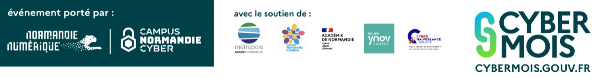

Alerte · 21 h 47
L'épreuve du mot de passe
Le site de ton club vient d'être piraté. 4 000 mots de passe volés, dont le tien. Le pirate signe « Crochet ». Sa machine essaie mille milliards de combinaisons par seconde. Il te reste une chance : un nouveau mot de passe qu'il ne cassera pas.
N'écris pas un vrai mot de passe. Invente-en un. Rien ne sort de ton navigateur.
Ce que la machine y reconnaît
Face à un attaquant qui essaie 1 000 milliards de combinaisons par seconde.
Tes défenses
Crochet abandonne.
Onze défenses sur onze. Ton compte tient. Mais Crochet ne s'arrête jamais à un seul site…
Crochet ne casse pas ton mot de passe. Alors il pirate un autre site, mal protégé, où tu as mis le même. Puis il l'essaie partout.
Six comptes perdus pour un seul site piraté. Règle numéro un : un mot de passe différent par compte.
Question 1 sur 3
Les trois réflexes
01 Un par compte
Un site se fait pirater. Si tu réutilises le même, tous tes autres comptes tombent avec.
02 Double authentification
Un code en plus du mot de passe. Même volé, il ne suffit plus. C'est la protection la plus rentable.
03 Jamais le donner
Aucun service ne te le demandera. Un message qui le réclame est une arnaque, même bien imitée.
Où trouver de l'aide
Continue chez toi
Scanne pour retrouver les conseils officiels sur les mots de passe, et quoi faire si un compte est piraté.
